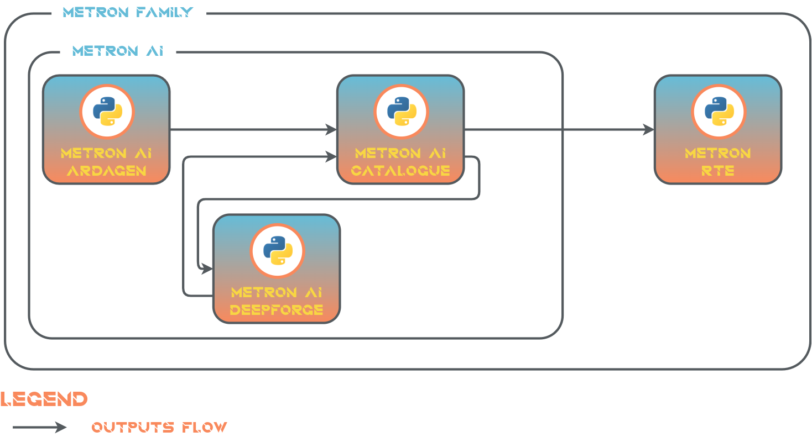
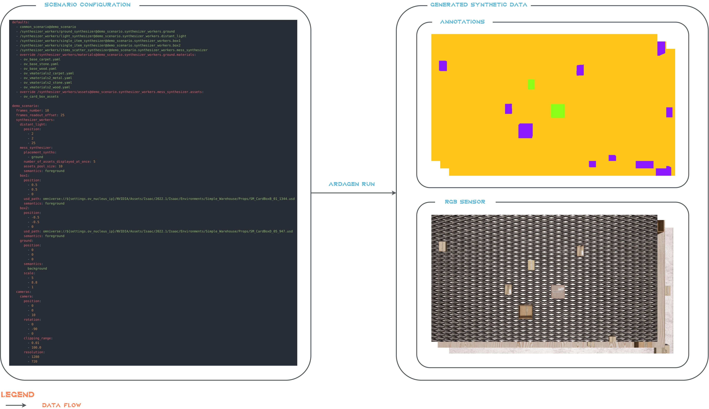

Introduction#
Metron AI ArDaGen is a member project of the Metron’s family. This project tackles synthetic data generation using NVIDIA Omniverse. See a digram with the Metron family members.
ArDaGen generates synthetic data which is stored, defined and versioned in a form of datasets in Catalogue. DeepForge uses the datasets for deep learning models training. Trained models are stored back in Catalogue. Models, algorithms and artifacts from Catalogue are deployed into Metron RTE.
Motivation#
Omniverse provides Replicator extension, which is performing stage composition and random stage customization. It is designed for synthetic data generation. The extension alone is not enough for a comfort use. Therefore, NVIDIA created OV Replicator Composer which allows to configure the setup via config files and run the data generation from the command line.
Even though it offers rich posibilities, it has gaps which ArDaGen fills. Pros and cons of both tools are analyzed in the table.
Comparison Criteria |
NVIDIA OV Replicator Composer |
Metron AI ArDaGen |
|---|---|---|
OV Replicator usage |
✔️ built on OV Replicator |
✔️ built on OV Replicator |
configuration |
❌ using plain YAML and TXT files |
✔️ using SOTA Meta’s Hydra configuration framework |
configuration options |
✔️ vast configuration options |
❌ limited configuration options (first set of features integrated) |
extendability |
❌ not designed to be extended by users |
✔️ designed to be easily extended by users |
use case specific customization |
❌ not designed to be customized for customer’s specific use case |
✔️ designed to be customized for specific needs and complex scenarios |
dev team size |
✔️ team-like size |
❌ single person |
Metron AI ArDaGen Overview#
Metron AI ArDaGen was designed to create a comprehensive way to setup complex scenarios for synthetic data generation, which can be automatically executed in headless mode. Extendability and modularity was a key aspect to achieve the goal. It uses SOTA metaverse from NVIDIA called Omniverse with its powerful Replicator extension for scene randomization. Together with powerful Hydra configuration frameworks creates a foundation for a comprehensive configurable solution. The software architecture was designed so user can add new Python modules (called as Synthesizers) to add, control and randomize specific scene parts.
See the following example. On the left hand side you can find a sample scenario configuration and on the right hand side you can find an output data (semseg annotations only).
{kind=link}